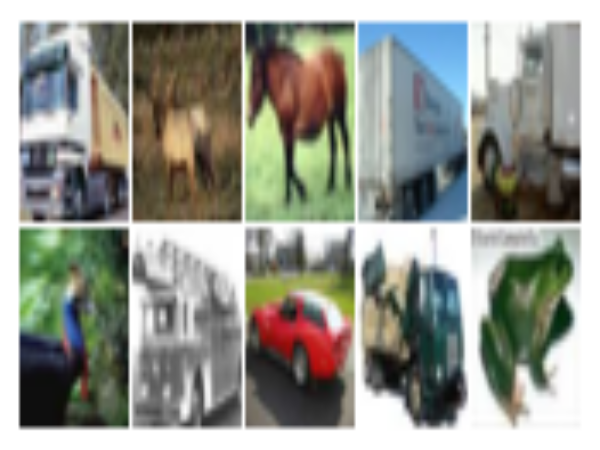

Extensions
Extension for Plots
We used the same settings for the plot function in all previous examples. Therefore, it makes sense to write an auxiliary function setting attributes for the plot function. However, this function will depend on the Plots package, and if we add Plots to ImageInspector, it will significantly slow the loading time.
To define an extension, we need firstly modify the Project.toml. We have to add two new sections. The first new section weakdeps specifies all the dependencies we need for our extension. In our case, we only need Plots, so we add the following in the Project.toml
[weakdeps]
Plots = "91a5bcdd-55d7-5caf-9e0b-520d859cae80"The second new section is extensions and in this section, we have to specify the extension name and the dependencies that the extension uses. In our case, the name is PlotsExt and we only need Plots (more dependencies can be specified as a list of their names)
[extensions]
PlotsExt = "Plots"We can also specify which versions of Plots package our extension supports. It can be done by adding a new record in the compat section
[compat]
Aqua = "0.8"
Colors = "0.12, 0.13"
Plots = "1"
Test = "1.9"
julia = "1.9"Now, we define an empty function imageplot inside of the ImageInstructor, i. e., we add the foollowing code to the src/ImageInstructor.jl
# src/ImageInstructor.jl
function imageplot endThis step is needed, since we will add methods to this function inside our extention.
The last step is to create the extension itself. The code for extension must be stored in ext folder in the root dir of the package. The code for the extension is them must be defined in the file with the same name, i. e., we have to create a new file ext/PlotsExt.jl and add the code into it
# ext/PlotsExt.jl
module PlotsExt
import Plots
using ImageInspector
using ImageInspector.Colors
function ImageInspector.imageplot(x, ind; flip=true, nrows=-1, ncols=-1, sep=1, kwargs...)
img = imagegrid(x, ind; flip, nrows, ncols, sep)
return imageplot(img; kwargs...)
end
function ImageInspector.imageplot(x; flip=true, kwargs...)
img = image(x; flip)
return imageplot(img; kwargs...)
end
function ImageInspector.imageplot(
x::AbstractMatrix{<:Color};
legend=false,
axis=nothing,
border=:none,
kwargs...
)
return Plots.plot(x; legend, axis, border, kwargs...)
end
endNote, that we defined a new module, that has the same name as our extension. And that's all. Now we can test, whether the extension works. We have to start a new Julia session and activate examples enviroment. Now, if we do not load Plots, the imageplot function will have no methods, as can be seen below
julia> using ImageInspector, MLDatasets
julia> x = CIFAR10(split=:train).features;
julia> imageplot(x, 1:10; nrows = 2, sep = 1)
ERROR: MethodError: no method matching imageplot(::Array{Float32, 4}, ::UnitRange{Int64}; nrows::Int64, sep::Int64)
[...]After loading the Plots package, the imageplot function will start working.
julia> using Plots
julia> imageplot(x, 1:10; nrows = 2, sep = 1)
Extension for Makie
We can create multiple extensions for one package. For example, we can also create an extension for Makie.jl, which is an alternative package for generating plots. To do so, we have to follow the same steps as in the case of extension for Plots.
The first step is to modify the Project.toml file in the following way
[weakdeps]
CairoMakie = "13f3f980-e62b-5c42-98c6-ff1f3baf88f0"
Plots = "91a5bcdd-55d7-5caf-9e0b-520d859cae80"
[extensions]
MakieExt = "CairoMakie"
PlotsExt = "Plots"
[compat]
Aqua = "0.8"
CairoMakie = "0.12"
Colors = "0.12, 0.13"
Plots = "1"
Test = "1.9"
julia = "1.9"In other words, our extension for Makie has name MakieExt and depends on CairoMakie. Now we can create the extension itself by creating file ext/MakieExt.jl and adding the following code into it
module MakieExt
import CairoMakie
using ImageInspector
using ImageInspector.Colors
function ImageInspector.imageplot(x, ind; flip=true, nrows=-1, ncols=-1, sep=1, kwargs...)
img = imagegrid(x, ind; flip, nrows, ncols, sep)
return imageplot(img; kwargs...)
end
function ImageInspector.imageplot(x; flip=true, kwargs...)
img = image(x; flip)
return imageplot(img; kwargs...)
end
function ImageInspector.imageplot(x::AbstractMatrix{<:Color}; kwargs...)
f, ax = CairoMakie.image(reverse(x'; dims=2); kwargs...)
CairoMakie.hidedecorations!(ax)
CairoMakie.hidespines!(ax)
return f
end
endNow it's time to test the extension. To do so, we first have to install CairoMakie into examples enviroment
(ImageInspector) pkg> activate ./examples
(examples) pkg> add CairoMakieWe have to start a new Julia session and activate examples enviroment. Now, if we do not load CairoMakie, the imageplot function will have no methods, as can be seen below
julia> using ImageInspector, MLDatasets
julia> x = CIFAR10(split=:train).features;
julia> imageplot(x, 1:10; nrows = 2, sep = 1)
ERROR: MethodError: no method matching imageplot(::Array{Float32, 4}, ::UnitRange{Int64}; nrows::Int64, sep::Int64)
[...]After loading the CairoMakie package, the imageplot function will start working.
julia> using CairoMakie
julia> imageplot(x, 1:10; nrows = 2, sep = 1)